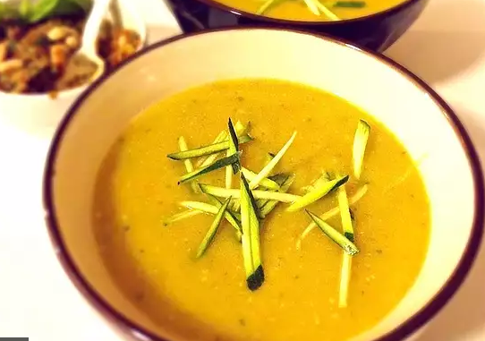

Veggie-Pesto Soup Recipe

Light & filling
Ingredients:
- 6 cups water
- 6 cubes vegetable broth
- 2 medium potatoes, cubed
- 2 carrots, diced
- 1 medium onion, diced
- 1 large zucchini, cubed
- 2 Tbsps sun-dried tomato pesto
Steps:
- Boil water in a large pot & dissolve broth cubes
- Place potatoes, carrots, onion, zucchini into pot; cook for 10 minutes
- Reduce heat to low, stir in sun-dried tomato pesto
- Simmer for 35 minutes or until potatoes are very tender